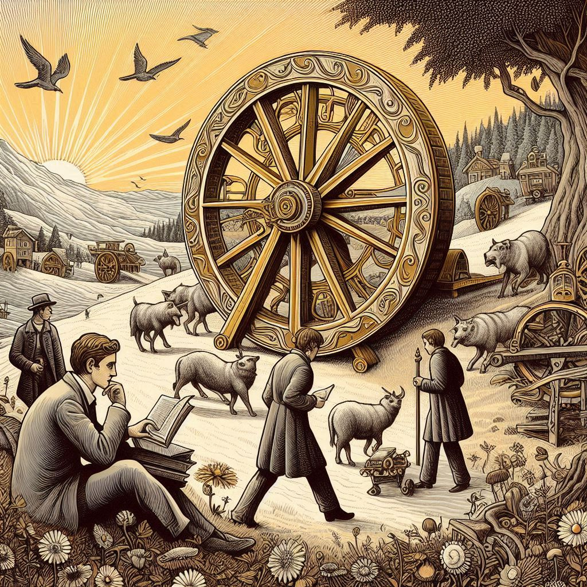

수래바퀴 아래서
목차
작가
헤르만 헤세
출판일
1906년
감상평에 대한 AI그림
이 소설은 자신이 원하는 것을 포기하고 살아가다 삶의 목적을 잃는 소년의 이야기를 그린 책으로, 현대 우리나라의 입시경쟁 과열로 인해 생기는 문제점과 비슷하다는 생각이 들었다. 주인공의 비극적인 결말이 안타까웠으며, 진정한 행복을 추구하기 위해선 어떻게 살아가야 할지 고민해볼 수 있었다.

감상평에 대한 AI평가
~~~~AI평가~~~~~
✨ 현대적 해석: 소설 속 주제를 단순히 요약하는 것이 아니라, 현대 한국의 입시 경쟁 문제와 연결 지어 해석한 점이 인상적입니다. 이를 통해 독자가 작품과 현실을 연관 지어 생각할 수 있게 만들었습니다.
✨ 주인공의 심정에 대한 공감: "비극적인 결말이 안타까웠다"는 표현을 통해 감상자의 감정을 솔직하게 드러낸 점이 좋습니다.
✨ 철학적 질문 제시: "진정한 행복을 추구하기 위해선 어떻게 살아가야 할지 고민해볼 수 있었다"라는 문장은 작품을 단순히 소비하는 것이 아니라, 그것을 계기로 깊이 있는 성찰을 했다는 점에서 의미가 있습니다.